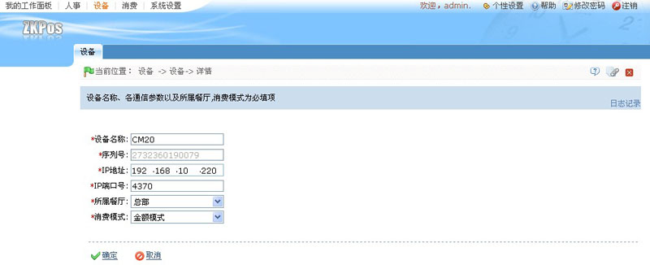
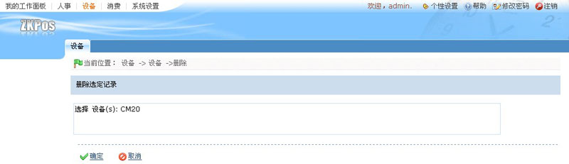
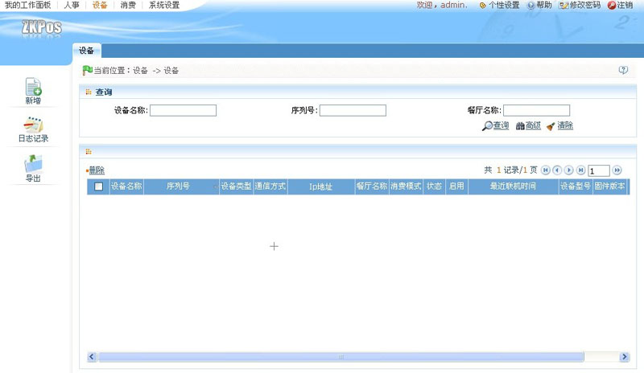

5.2 设备管理
设备管理包括了设备的编辑和删除，方便用户更好的管理设备信息。
1、设备的编辑
（1）、向右拖动设备信息列表下方的滚动栏，单击相关操作下方的【编辑】按钮，进入如下图所示设备信息编辑页面：

（2）、根据需要修改完设备信息后，单击【确定】按钮，保存修改后的设备信息，并返回设备管理页面。
2、设备的删除
（1）、单击设备名称前面的选择框 ，打钩选中需要删除的设备。用户可同时选中多个设备进行操作，也可单击设备名称列名前面的选择框，选中所有设备进行操作。
，打钩选中需要删除的设备。用户可同时选中多个设备进行操作，也可单击设备名称列名前面的选择框，选中所有设备进行操作。
（2）、选中设备后，直接单击设备信息显示列表中设备名称上方的【删除】按钮。或者向右拖动设备信息列表下方的滚动栏，单击相关操作下方的【删除】按钮，进入如下图所示的删除设备页面：

（3）、单击【确定】按钮，删除选中的设备，并返回设备管理页面，此时设备信息列表中将不再显示该条设备信息，即删除成功，如下图所示：
